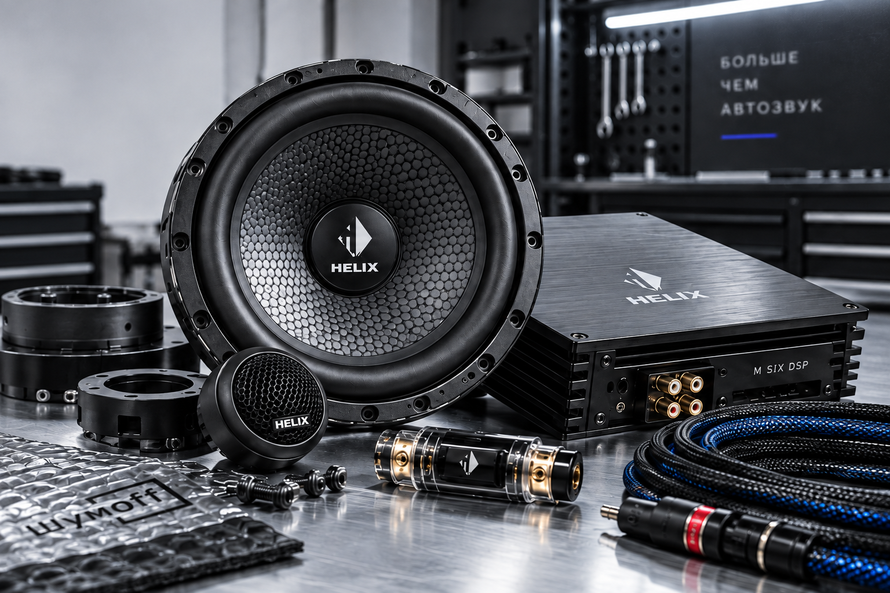
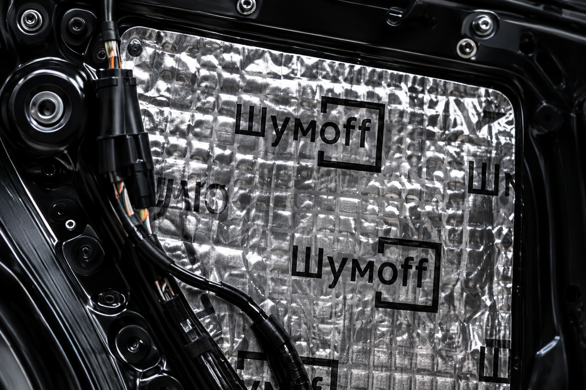
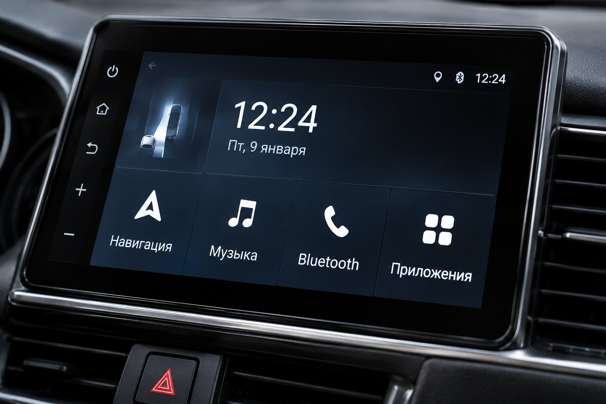
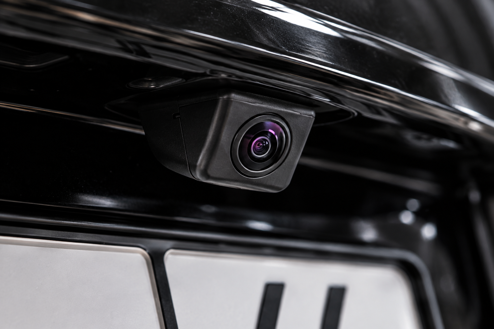
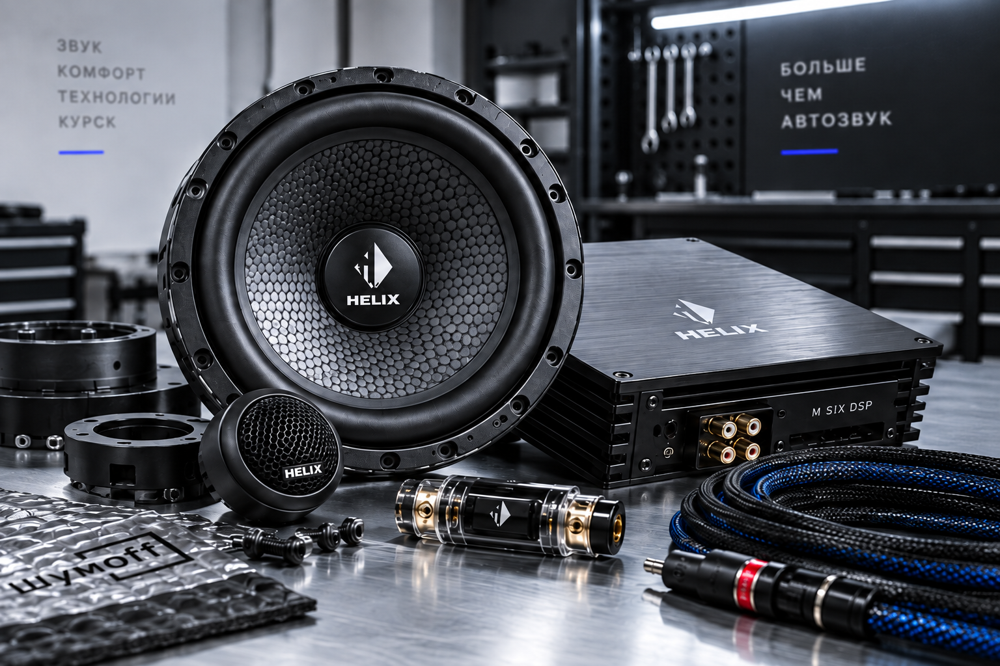
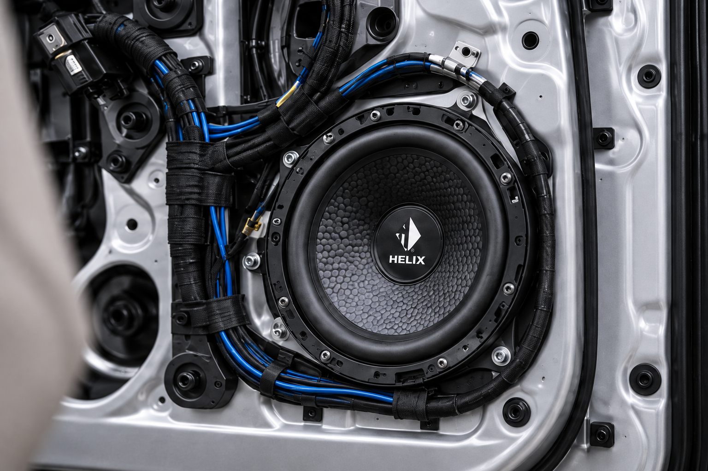
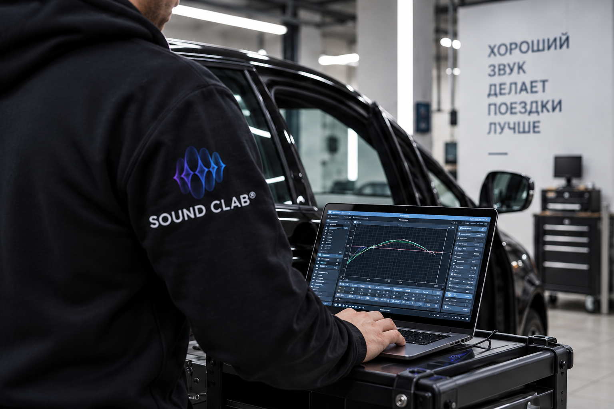

КУРСК — АВТОЗВУК. КОМФОРТ. ТЕХНОЛОГИИ.
SOUND CLAB
STUDIO
Ваш автомобиль. Ваш звук.
Автозвук, шумоизоляция и мультимедиа в Курске
Обсудить проект Курск · Кузнечная улица, 5Знакомый автомобиль.
Новые ощущения.
От замены штатных динамиков до комплексной доработки. Начните с того, чего не хватает именно вам.

Автозвук
Больше деталей в любимых треках.
Динамики, усилители и сабвуферы
Шумоизоляция
Меньше дороги. Больше комфорта.
Двери, салон и колёсные арки
Мультимедиа
Всё нужное перед глазами.
Android-магнитолы
Камеры и регистраторы
Больше обзора вокруг автомобиля.
Обзор и контрольЧто хочется
изменить?
Не обязательно разбираться в оборудовании. Достаточно рассказать, что не нравится сейчас.

Не просто мощнее.
Согласованнее.
Хорошая система начинается с сочетания компонентов, а не с одной громкой характеристики.
- Акустика
- Детали, голоса и характер звучания.
- Усиление
- Возможности системы и контроль динамиков.
- Сабвуфер
- Низкие частоты и ощущение объёма.
- Настройка
- Баланс с учётом салона и ваших предпочтений.

04 / ВНИМАНИЕ К ДЕТАЛЯМ
То, что скрыто,
тоже важно.
За обшивкой остаются крепления, провода и соединения. Их стоит обсудить так же внимательно, как выбор динамиков.
- Расположение оборудования
- Прокладка и крепление проводки
- Интеграция в интерьер автомобиля
Сначала слушаем вас.
Потом — вместе.
Понятный путь от пожеланий к решению для вашего автомобиля.
- 01
Знакомство
Модель автомобиля, любимая музыка и то, что хочется изменить.
- 02
Решение
Состав оборудования, объём работ и бюджет для обсуждения.
- 03
Установка
Монтаж компонентов по согласованной задаче.
- 04
Настройка
Проверка функций и обсуждение звучания в салоне.

06 / ФИНАЛЬНЫЙ ШТРИХ
Включите трек,
который знаете
наизусть.
Знакомая музыка поможет объяснить, какое звучание нравится именно вам.
Найти своё звучаниеМожно улучшить звук без полной замены системы?
Начать можно с обсуждения отдельных компонентов. Возможность сохранить штатную магнитолу и акустику зависит от автомобиля и желаемого результата.
Сколько стоит установка?
Стоимость зависит от автомобиля, оборудования и объёма работ. Расскажите о задаче, чтобы обсудить состав решения и расчёт.
Сколько времени займут работы?
Срок зависит от выбранных доработок. Его необходимо согласовать со студией до записи на установку.
Можно установить своё оборудование?
Уточните это заранее: сообщите модели компонентов и автомобиля. Совместимость и состав работ требуют отдельного обсуждения.
Что подготовить к консультации?
Марку, модель и год автомобиля, описание текущей системы, пожелания и ориентир по бюджету. Фотография штатной магнитолы также может быть полезна.
Какой будет
ваша система?
Расскажите об автомобиле и задаче.
Начнём с разговора.
Форма подготовит текст запроса для сообщения студии. Автоматическая отправка не подключена.